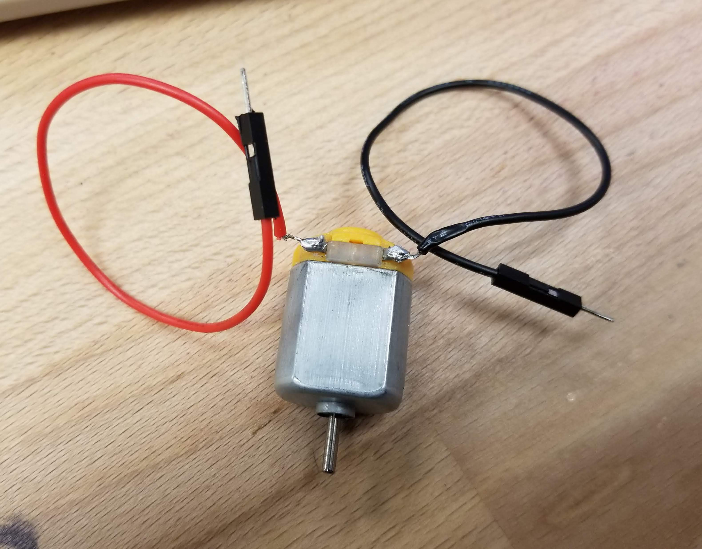

Solder a small circuit and create the schematic.
A snippet of the schematic:

The wires on my DC motor were not securely soldered initially so during my first use of it, the wires suddenly fell off. I had the solder both of the wires back on. The schematic I drew is of a circuit in which my motor is connect to ground and power.